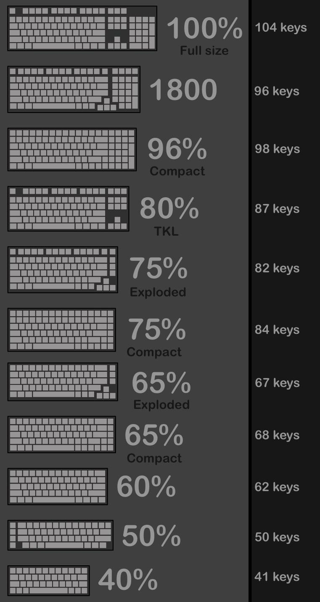
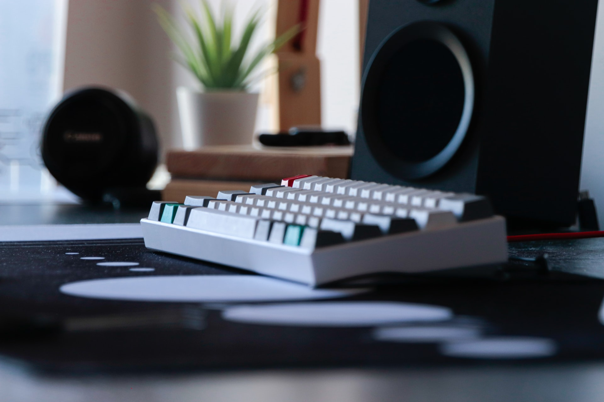
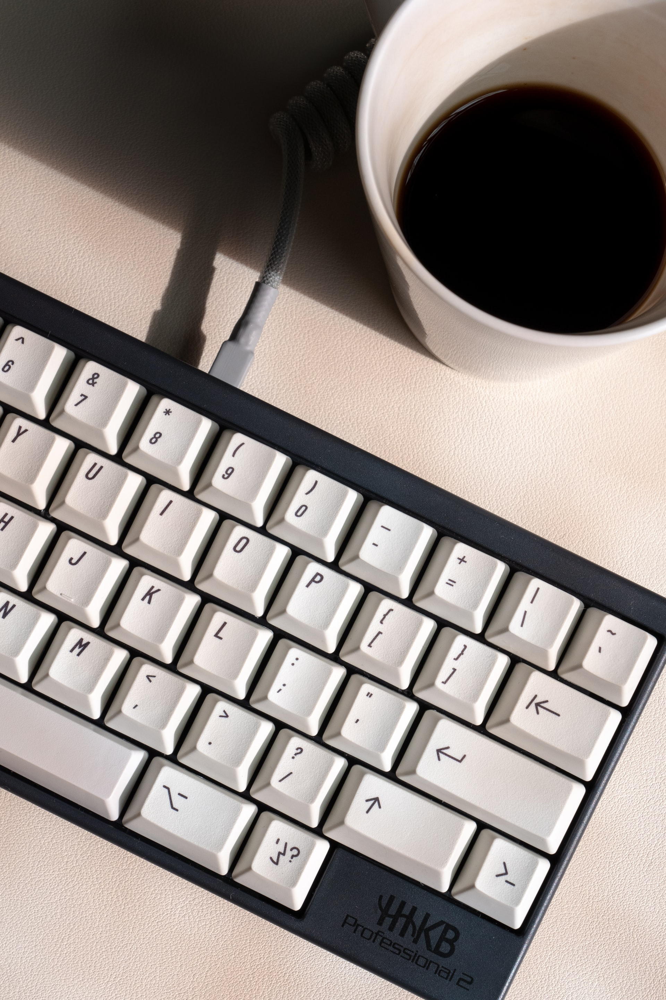
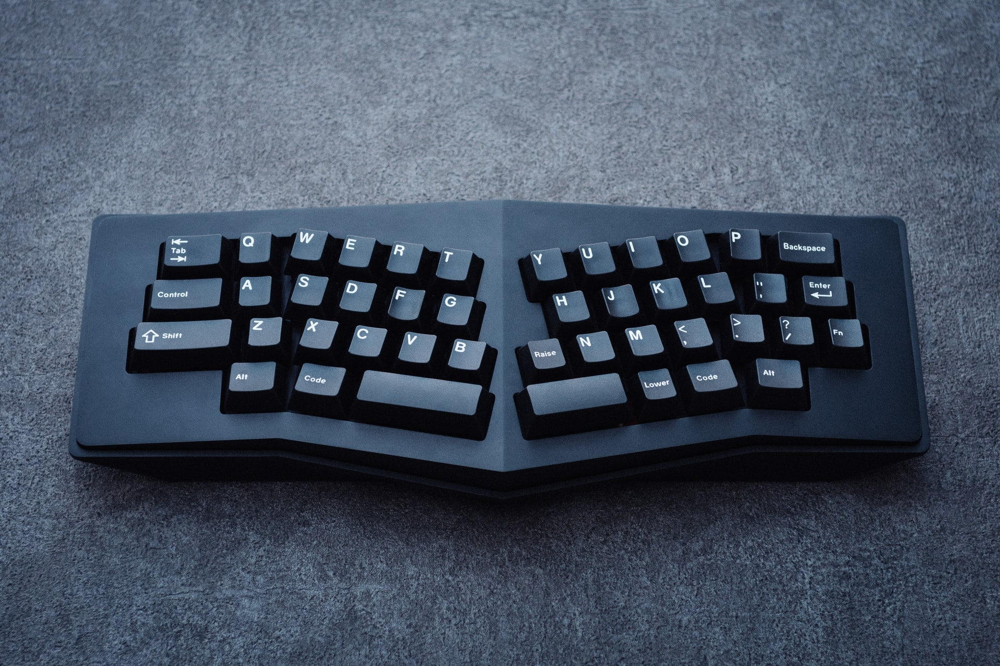
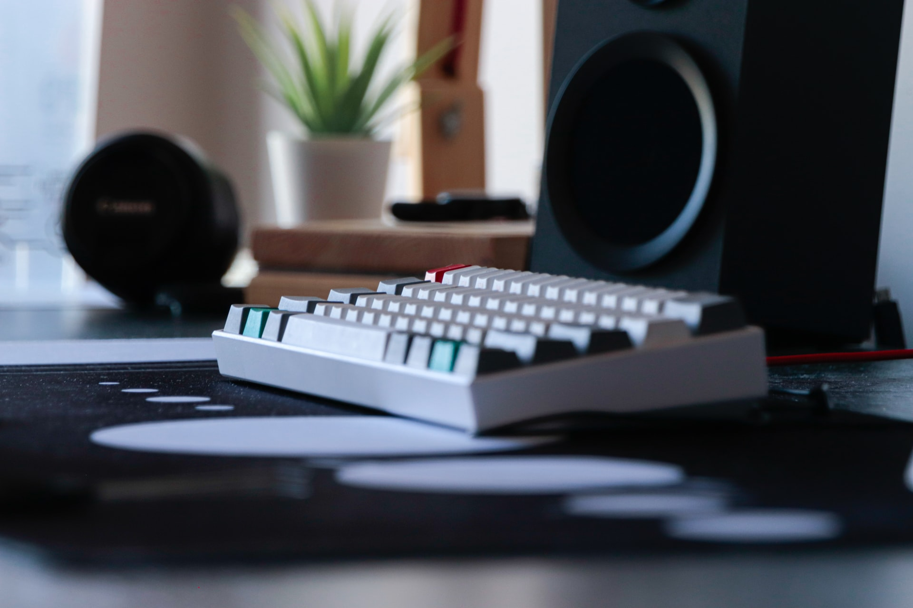
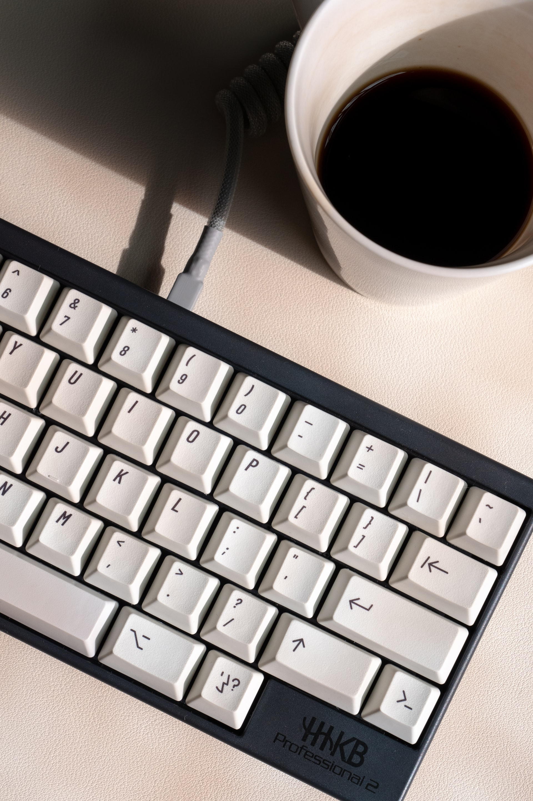
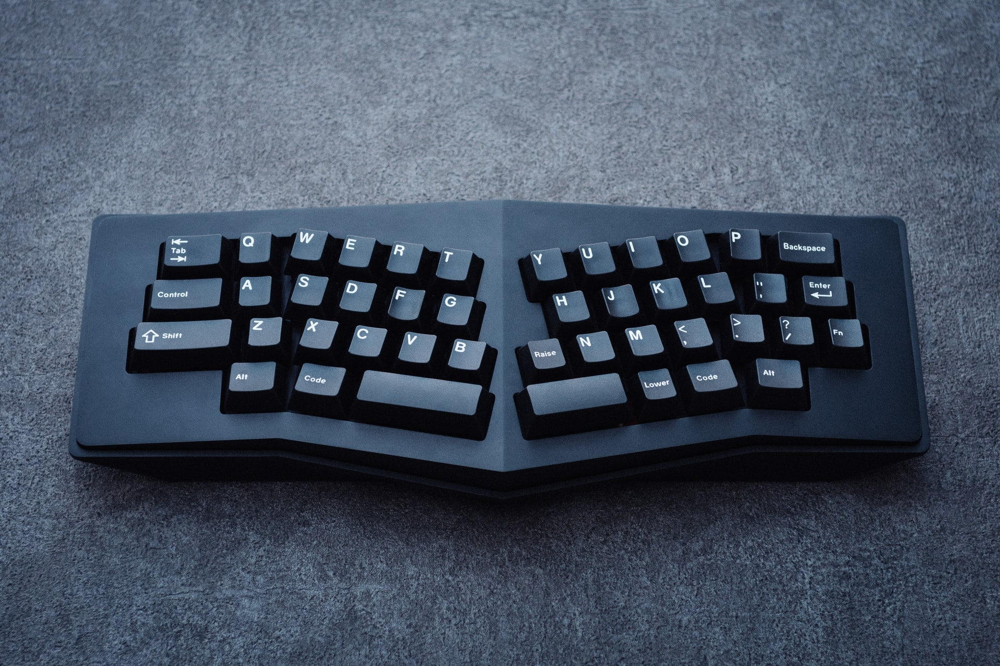

Why Mechanical Keyboards
Most keyboards that come with laptops and desktops suck. Mechanical keyboards, so called because they have individual mechanical switches under each key, are more enjoyable to type on, more durable, and more customizable than those typical membrane, butterfly, or scissor-switch keyboards. And for people who spend all day typing, programming, or gaming, it can be satisfying to customize the size, switches, keycaps, layout, and even the backlight to your exact needs. If you're interested in mechanical keyboards but don't know where to start with all of the terminology and options, start here. And if you know the basics but want to go a little deeper, we'll point you in the right direction.
The keyboard, a tool that each and every one of us interacts with daily. We probably spend as much time on a keyboard as we do on our phones and while we are constantly looking to own the next flagship device, few look to enhance their typing experiences. The keyboard is often overlooked, possibly never considered by most as something worth investing in, but mechanical keyboards aims to change that.
Size and layout
The first and most important decision when shopping for a keyboard is what size and layout you want. You'll have about a gazillion options but they fall into four main categories: full-size, tenkeyless, compact, and ergonomic.
Full-size keyboards have all of the keys, including letters, numbers, modifiers, function keys, arrow keys, and a number pad. We recommend this size only for people who prefer a built-in number pad. Wide keyboards force you to place your mouse farther from your body, which can put strain on your shoulders, neck, and back.
Tenkeyless (often abbreviated TKL) keyboards lack a number pad but have all of the other keys. We recommend this size for most people because it's significantly more compact than full-size and has all of the most commonly used keys. And a standalone number pad is a better option if you want a numpad, because you can move it out of the way when you're not using it.
The compact category is a catchall for a variety of sizes and layouts. Boards that are 75%, like the Vortex Tab 75, have the same keys as tenkeyless, but they're all smushed together so that the keyboard has no empty space. Boards that are 65% and 68%, like the Qisan Magicforce and Drop Alt, lose the function keys along the top but keep the arrow keys and a few keys from the navigation cluster. We think 65% and 68% keyboards hit the sweet spot for most people—they're much smaller than tenkeyless boards, but they have all the most frequently used keys. Keyboards like the Vortex Tab 60 and the Obins Anne Pro 2 include only the essential block of letters, numbers, and modifiers and have no function keys, no arrow or navigation keys, and no numpad. We recommend a 60% keyboard only if you're willing to retrain yourself to remember key combinations every time you need the arrow or function keys.
Ergonomic keyboards can come in any of the above sizes but are split down the middle so you can hold your hands, wrists, arms, and shoulders at a more natural angle than you would on traditional flat keyboards. Ergonomic keyboards are either partially split and fully split. Partially split keyboards have a small gap down the middle but are connected at the bottom; they have a lower learning curve but 't as adjustable as fully split keyboards. Fully split keyboards are the most flexible and adjustable, so you can angle each half however you prefer.
Types of Mechanical Switches
Gallery
 




